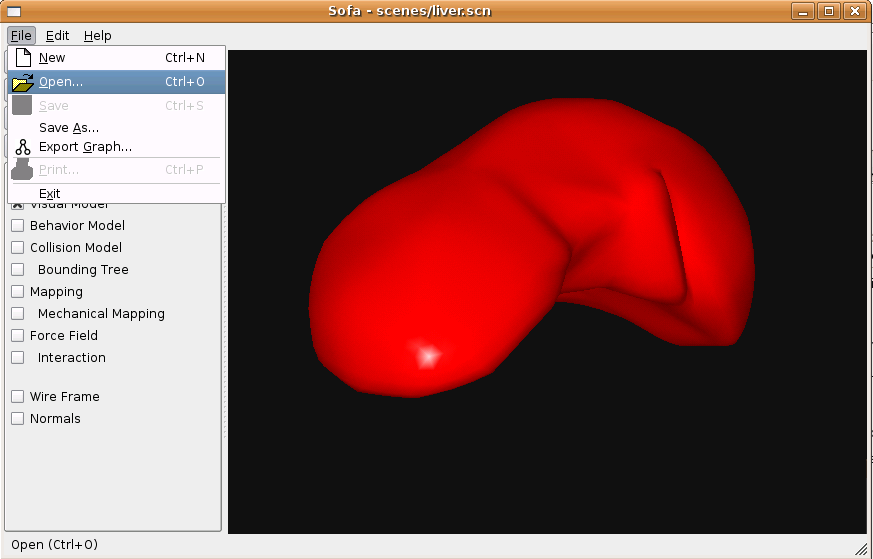

sofa/scenes
- This directory contains example scenes, such as liver.scn.
- There are commented examples
and their associated files in directory
commentedExamples/.
- Shared data files are located in directories
BehaviorModels/, CollisionModels/,
Topology/, VisualModels/.
- You can open and run scene files using menu File > Open as
illustrated in the following image.
